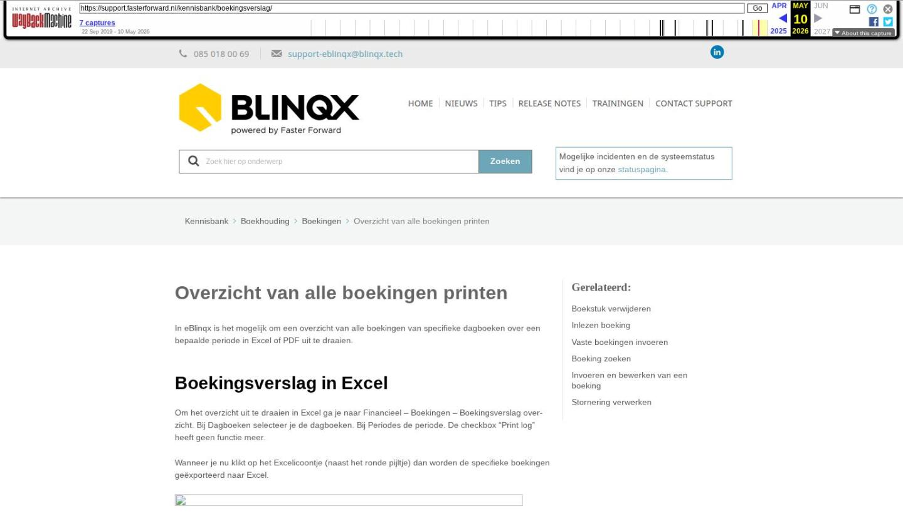

FinRust koppeling

Tekstinhoud
FinRust koppeling | Support
---
FinRust koppeling
Vanuit eBlinqx stuur je gemakkelijk de gegevens naar FinRust via een tabblad. Zo kan je met de gegevens aan de slag in FinRust om een rapport op te stellen. Met dit rapport kun je in gesprek gaan met de klant voor een uitgebreide financiële foto.
Inrichting FinRust
Tabblad
Brondata downloaden en uploaden
Hoe werkt de koppeling?
1. Klant levert gegevens aan via Digimap of Uwkluis
2. Stuur via het tabblad de gegevens naar FinRust of download bestand in eBlinqx
Verstuur de gegevens via het tabblad
Download het bestand in eBlinqx
3. Upload bestand in FinRust (niet van toepassing als je gegevens doorstuurt via tabblad)
4. Bekijk gegevens in FinRust
5. Stel rapport op voor klant
Voorbeeldrapport FinRust
Inrichting FinRust
Tabblad
Vanuit eBlinqx stuur je gemakkelijk de gegevens door naar FinRust via het tabblad Export – FinRust.
Voor het tabblad dien je de juiste rechten te hebben (en deze is niet beschikbaar in Elements). En de koppeling moet gemaakt zijn met FinRust. Is de koppeling nog niet gemaakt met FinRust stuur dan een e-mail naar robert-jan@finrust.nl.
Is de koppeling al wel gemaakt, maar heb je de rechten niet laat dan jouw beheerder/mutatiebevoegde een e-mail sturen naar support-eblinqx@blinqx.tech om dit recht voor je aan te zetten.
Brondata downloaden en uploaden
Als je met Elements werkt (en ook met eBlinqx) dan is het mogelijk om het laatste brondata-bestand te downloaden en te gebruiken in FinRust. Hiervoor is geen aparte inrichting benodigd net zoals bij het tabblad. Om dit brondata bestand te ontvangen gebruik je de Ockto koppeling. Dit bestand download je via het tabblad Startpagina – Brondata in het dossier.
Hoe werkt de koppeling?
1. Klant levert gegevens aan via Digimap of Uwkluis
De klant logt in in zijn eigen Digimap of Uwkluis. Deze heb je aan hem verstrekt vanuit eBlinqx. De klant levert de gegevens aan via Ockto (Digimap en Uwkluis). Dit kan hij doen door de QR-code te scannen. Hier lees je meer over Ockto in de Digimap. Hier lees je meer over Ockto in Uwkluis.
Let op: deze QR-code staat er alleen als je gebruik maakt van de Ockto koppeling en als je, wat betreft Uwkluis, een verzoek heb gestuurd via de workflow. Als je wilt dat dit ingericht wordt, kan je contact opnemen met support-eblinqx@blinqx.tech.
Vervolgens logt de klant op de Ockto-app in met zijn DigiD-gegevens. Hij bepaalt hier wat hij naar zijn financieel adviseur wil sturen.
2. Stuur via het tabblad de gegevens naar FinRust of download bestand in eBlinqx
Verstuur de gegevens via het tabblad
Indien de koppeling met FinRust en je hebt toegang tot het tabblad dan kan je het dossier direct versturen naar FinRust. Je gaat hiervoor naar Export – FinRust en je klikt op 'Open FinRust'. Je wordt doorgeleid naar FinRust waar ze door middel van de API klantgegevens ophalen voor het dossier. Ook wordt de beschikbare brondata van Ockto direct opgehaald. Je hoeft deze dan niet meer apart te downloaden en uploaden.
In dit filmpje zie je hoe je de gegevens kan exporteren naar FinRust en vanuit daar een nieuw klant kan aanmaken of een bestaande klant kan bijwerken.
Download het bestand in eBlinqx
Wanneer de klant zijn gegevens heeft aangeleverd, is er in eBlinqx een brondata-bestand beschikbaar. Deze is te downloaden in het klantdossier van de klant, onder het tabblad 'Brondata'.
Zodra je op de knop 'Download bestand' klikt, wordt een json-bestand van dit dossier gedownload. Sla dit bestand op op je computer.
3. Upload bestand in FinRust (niet van toepassing als je gegevens doorstuurt via tabblad)
Importeer het json-bestand vervolgens in FinRust via de knop 'Importeer klant vanuit Ockto bestand'.
Doordat je dit bestand uploadt, wordt er automatisch een nieuw klantdossier aangemaakt.
4. Bekijk gegevens in FinRust
Selecteer vervolgens eerst de klant die zojuist is aangemaakt.
Onder 'Persoonsgegevens' en 'Huidig Inkomen' (zie onderstaand) zie je de gegevens die uit het Ockto (.json bestand) zijn opgehaald.
Ook onder het tabblad 'Pensioen' zie je de pensioeninkomens die zijn opgehaald. Hier kun je ook extra inkomens toevoegen indien gewenst.
Daarnaast wordt de situatie bij overlijden weergegeven met een grafiek. Ook heb je direct duidelijk inzicht in huidige netto inkomsten en inkomsten na overlijden van één van beide.
5. Stel rapport op voor klant
Wanneer de gewenste situaties zijn bepaald, exporteer je alle gegevens eenvoudig in een overzichtelijk rapport.
Met dit rapport kun je in gesprek gaan met de klant voor een uitgebreide financiële foto.
Voorbeeldrapport FinRust
FinancieelRapport-Voorbeeld-FinRustDownload
Laatste update: 20 oktober 2025
Tagged: koppeling
Was deze informatie nuttig?
Ja Nee